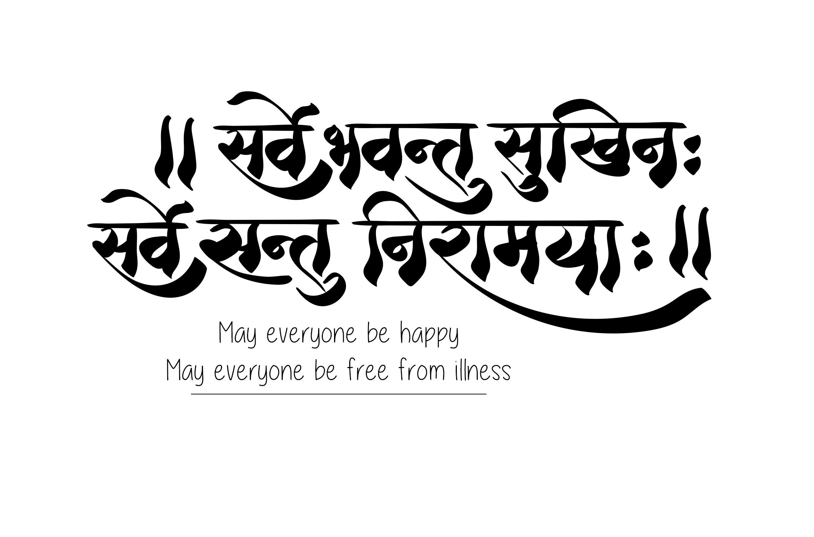

About us - ADOCMEDI is a website where patients, doctors and pharma people all come at one platform to make their life more easier. We will provide full security and privacy for your data.
ADOCMEDI help people to save there time and helping Patients to take digital appointment and Rx. Patient can add their medical reports here also so it shows to his doctor directly. With this we can save paper and make our INDIA a green country. If not require don't take paper from doctor. Now you can save your health data digitally and be free from worries of taking care of physical health records.Wherever you go you just need to give your last time visit appointment id or patient id for your last health details. Doctor find all your health records digitally.
Doctor Can...
ADOCMEDI also save time of doctor. With your registration on this website doctor can see every single data of their patient. Doctor don’t need to keep physical data for patient.By just entering patient id doctor can see all details of their patient like Rx ,medical reports,diagnose details etc.
Even near by patient can find doctor online and book appointment and if doctor provide their unique link to patient. Before reaching clinic doctor can see how many patients come today at clinic if all patient booked their appointment online.
Pharma Persons can...
ADOCMEDI also help pharma people to book appointment online and also find basic details of doctors.